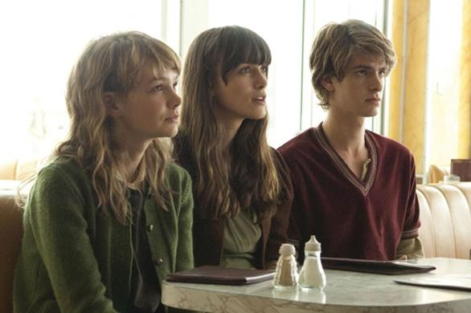

Top des films en 2011 (à fin janvier)

Début d'année 2011, un mois de passé, et c'est la fête au cinéma!
Le joyeux luron ci-dessus, c'est James Franco, alias Aran Ralston dans 127 hours, la petite perle de Danny Boyle. Le film sort en janvier/février un peu partout, et je vous le conseille chaudement. C'est bien joué, prenant, et surtout admirablement mis en scène avec une imagination débordante. Un film à la hauteur des attentes et en plus, une superbe bande-annonce que je vous remets en bas du post.

Ci-dessus, c'est le second Waouw du début d'année. Le film d'Aronofsky présenté à Venise en septembre 2010 arrive avec des éloges et des prix en février. Et je peux vous dire qu'il est aussi bien que tout ce que vous avez déjà pu lire dessus. Précipitez-vous.

Enfin, pour compléter le top 3, je prends un peu de risque. Pas de Fighter (très bien, mais pas exceptionnel non plus, si ce n'est la performance de Christian Bale), pas de Somewhere non plus (bien, bien ... bien), mais bien l'adaptation du roman de Kazuo Ishiguro. Alex Garland adapte le roman en script, et Mark Romanek met le script en image. Le réalisateur de One Hour Photo livre un film envoutant. Bien que j'ai eu quelques difficultés à rentrer dedans, j'y pensais encore plusieurs jours après l'avoir vu. C'est peut-être aussi un des films les mieux mis en image que j'ai vu depuis longtemps, par le directeur photo Adam Kimmel.
En dehors de ce top 3, d'autres films complètent un top 9 pour le moment. Un top 9, juste sur Janvier 2011, impressionant!
J'ai bien aimé The Company Men, sobrement interprété, tout comme j'ai bien aimé The King's Speech, un tout petit froid néanmoins. The Fighter où la performance de Christian Bale est à nouveau bluffante et Le Frelon Vert de Gondry, qui ne se prend pas du tout au sérieux.
Le top 10 des films en 2011, (à fin janvier 2011).
- 127 hours.
- Black Swan.
- Never let me go.
- The Company Men.
- The King's Speech.
- It's kind of a funny story.
- The fighter.
- The Green Hornet.
- Somewhere.
- Winter's bone.
Séances de rattrapage
En séance de rattrapage, deux films que j'ai raté en 2010 et que je conseille vivement: Exit through the gift shop, le vrai-faux docu de l'artiste Banksy, très très bien et The kids are allright, dont on a tellement parlé en 2010 et qui est effectivement très réussi.
Et pour finir la bande-annonce du top 1
[youtube=http://www.youtube.com/watch?v=OlhLOWTnVoQ]